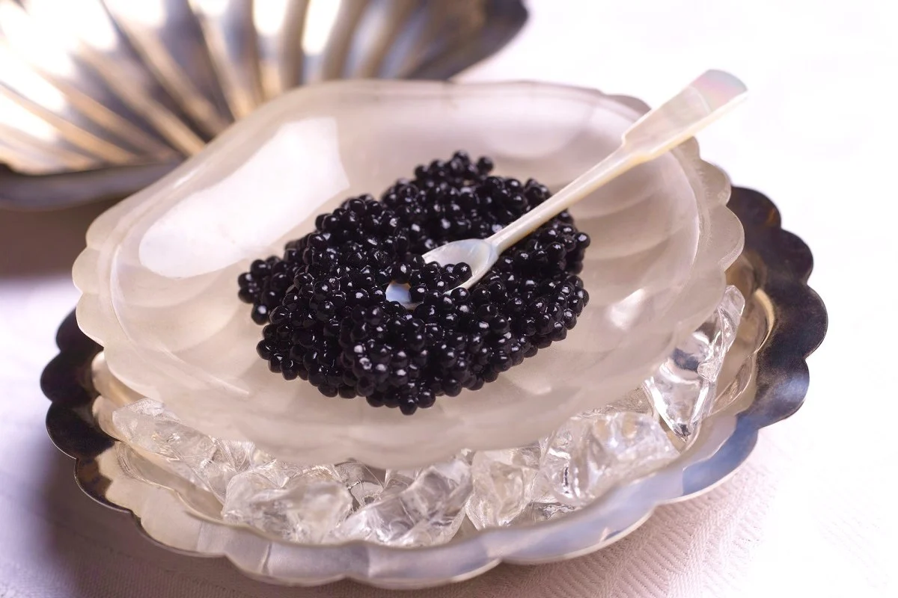

Sobre Euzinho
Home
Futuro
Comida
Curiosidades
Historia
Divertidamente
Caviar

Ingredientes
1/2 xícaras (chá) de água;
2 colheres (sopa) de açúcar;
1 xícara (chá) de óleo de milho
1 e 1/2 colher (chá) de ágar-ágar
Modo de Preparo
Antes de começar, deixe o óleo na geladeira até que fique bem gelado;
Em seguida leve a água e açúcar ao fogo, em uma panelinha tampada;
Deixe cozinhar em fogo médio por cerca de 20 minutos;
Depois que cozinharem triture com um mixer, na panela mesmo, e deixe reduzir até que fique no volume de 1 xícara;
Acrescente o agar agar e triture de novo com o mixer, para que se misture bem;
Cozinhe por mais 2 minutos, sempre mexendo e retire do fogo;
Espere esfriar por cerca de cinco minutos, coe e coloque em uma uma bisnaga grande (pode ser aquelas de catchup);
Pingue gota por gota da mistura no óleo gelado;
Depois que pigar todas as bolinhas, coloque em uma peneira e lave rapidamente para retirar o excesso de água;
DICA: Se você não for usar na mesma hora, guarde em uma vasilha com água.
Você pode servir o caviar de morangos com mini cheesecakes, tortas, doces e sobremesas em geral.
Comida